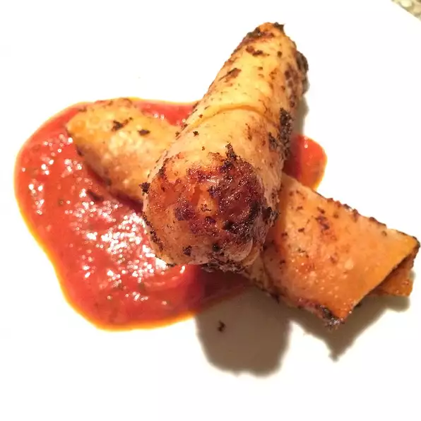

Pizza Rolls

Description
This mashed potatoes recipe comes from my mother. She also used irish butter and cream cheese instead of milk!
- Yukon Gold Potatoes
- 1 tbsp Irish Butter
- 1 tbsp Cream Cheese
- Salt to taste
- Pepper to taste
Steps
- Peel Potatoes
- Boil Water
- Mash Potatoes
- add butter, cream cheese, salt and pepper
- Stir and mash